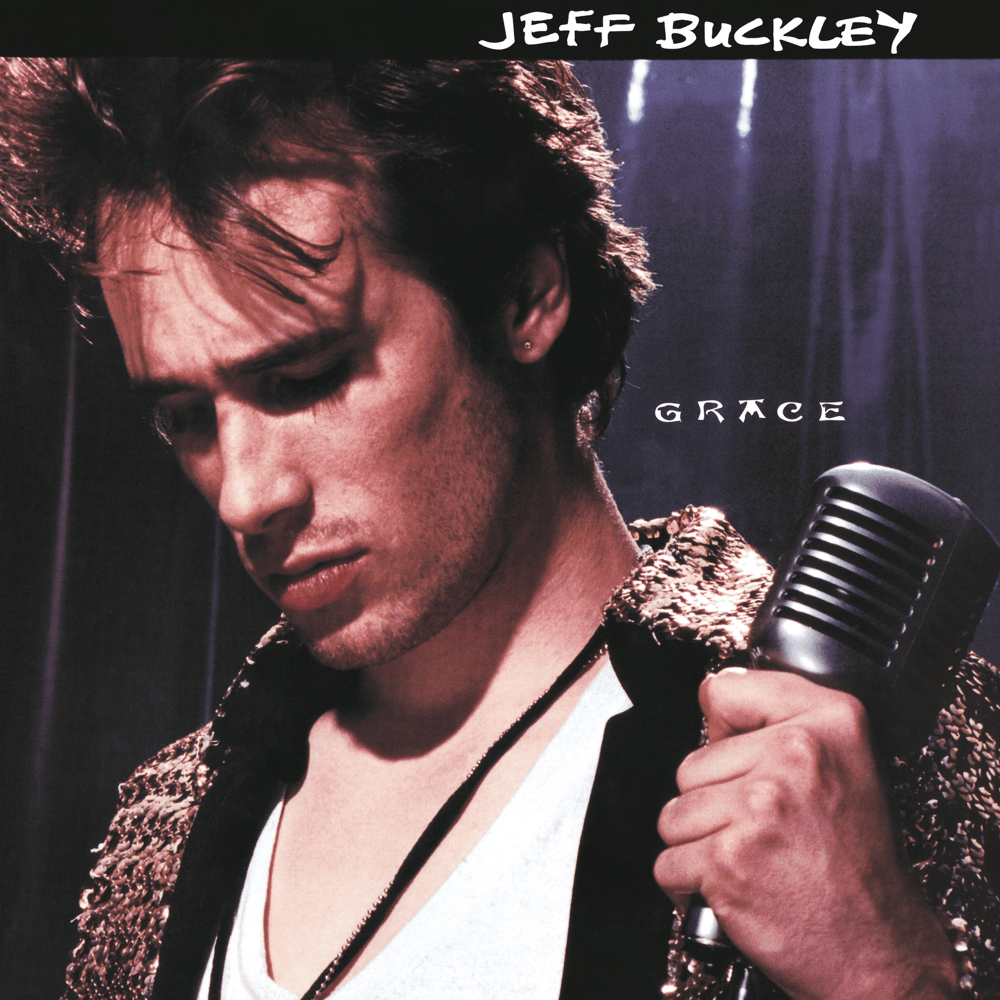

Mojo Pin
by Jeff Buckley

[Intro]
Ooh, ooh, ooh
Ooh, ah, ah
Ooh, ooh, ooh
Ooh, ooh, ooh
[Verse 1]
I'm lying in my bed, the blanket is warm
This body will never be safe from harm
Still feel your hair, black ribbons of coal
Touch my skin to keep me whole
[Verse 2]
Oh, if only you'd come back to me
If you laid at my side
Wouldn't need no Mojo Pin
[Chorus]
Don't wanna weep for you, don't wanna know
I'm blind and tortured, the white horses flow
Memories fire, the rhythms fall slow
Black Beauty, I love you so
[Verse 3]
Oh, precious, precious, silver and gold
And pearls in oyster's flesh
Drop down, we two to serve
And pray to love
Born again from the rhythm
Screaming down from heaven
Ageless, ageless
And I'm there in your arms
See upcoming rock shows
Get tickets for your favorite artists
You might also like
[Chorus]
Don't wanna weep for you, I don't wanna know
I'm blind and tortured, the white horses flow
The memories fire, the rhythms fall slow
Black beauty, I love you so
So, slow, so, ah
[Verse 4]
Oh, the welts of your scorn, my love, give me more
Send whips of opinion down my back, give me more
Well, it's you I've waited my life to see
[Chorus]
Don't wanna weep for you, don't wanna know
I'm blind and tortured, the white horses flow
The memories fire, the rhythms fall slow
Black beauty, I love you so
So, black, black, black beauty